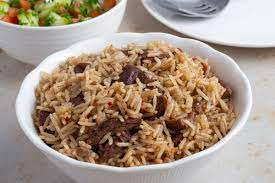

Beef Pilau

Description
Kenyan pilau rice is a simple dish of rice flavoured with meat stock and spices and sometimes cooked with vegetables.
This aromatic rice dish is commonly served at parties and occasions, usually with kachumbari (tomato & cucumber salad).
Similar to jollof rice in West Africa, it is always present on Eid, Christmas and other special occasions. Kenyan pilau rice is also known as Swahili pilau rice and East African pilau rice.
Enjoy … ;)
Ingredients
- Beef
- Onion
- Garlic
- Ginger
- Bay leaves
- Salt
- Rice
- Sunflower oil
- Ground Cloves
- Ground Cumin
- Ground cinnamon
- Ground cardamom
- Pepper flakes
Steps
- Peel the onions and garlic cloves.
- Wash the beef and add into a pan. Slice in one onion and 2 garlic cloves with the ginger. Add bay leaves, with a cup of water and some salt to taste.
- Cook until the beef is tender, then remove from heat. Keep the meet chunks and stock to one side
- Chop the remaining onion and garlic.
- Wash the rice and repeat until the water runs clear.
- Heat up the vegetable oil in a frying pan
- In another pan, heat the oil under low heat. Add the onions into the pot and cook until the onions start to caramelize and become brown. You should stir the onions with a wooden spoon continuously to prevent burning.
- Pour in the garlic and the ground spices. The brownish colour comes from the brown spices. Stir for 30 secs
- Add the rice into the pot. Pour in the stock and meat chunks. Add more water so there is enough to cook the rice (read the rice pack instructions). Taste for salt and add more if needed.
- Cover the allow the rice to cook until all the moisture is absorbed.